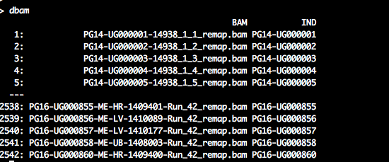
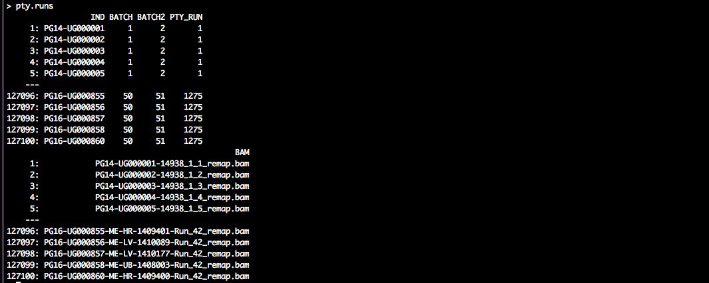

Stage 1 analysis: identify phylogenetically closely related individuals
Oliver Ratmann
2018-10-30
Introduction
This tutorial describes how to identify phylogenetically closely related individuals with phyloscanner from of a large population-based sample of deep sequences.
Setting up the analysis
Let us define input and output directories for our analysis in R.
require(Phyloscanner.R.utilities)
HOME <- "~/sandbox/DeepSeqProjects"
data.dir <- "~/sandbox/DeepSeqProjects/MRCPopSample_data"
prog.pty <- "/Users/Oliver/git/phylotypes/phyloscanner_make_trees.py"
in.dir <- file.path(HOME, "MRCPopSample_phsc_stage1_input")
work.dir <- file.path(HOME, "MRCPopSample_phsc_work")
out.dir <- file.path(HOME, "MRCPopSample_phsc_stage1_output")
dir.create(in.dir, showWarnings = FALSE)
dir.create(out.dir, showWarnings = FALSE)
dir.create(work.dir, showWarnings = FALSE)Here, prog.pty is the full path to the phyloscanner program phyloscanner_make_trees.py and work.dir is the name of a temporary directory.
Setting up phyloscanner runs to test the phylogenetic relationship of all possible pairs of individuals
Next, we define a large number of phyloscanner runs to test the phylogenetic relationship of all possible pairs of individuals. We start by generating a list of all bam files in our data directory (data.dir), and then we identify the corresponding individuals with a regular expression:
dbam <- data.table(BAM = list.files(data.dir, pattern = ".*remap\\.bam$", full.names = FALSE,
recursive = TRUE))
regex.person <- "^([A-Z0-9]+-[A-Z0-9]+)-.*$"
dbam[, `:=`(IND, gsub(regex.person, "\\1", BAM))]dbam should look similar to the following:

We then group individuals for phyloscanner analyses, so that phylogenetic linkage between every pair of individuals is assessed at least once. Specifically, individuals are grouped into batches of specified size, and then, all possible pairs of batches are formed. Each of these pairs of batches defines a group of individuals between whom phylogenetic linkages are assessed in one phyloscanner run. Thus, the number of individuals in each group is twice the batch size:
tmp <- unique(dbam$IND)
pty.runs <- phsc.define.stage1.analyses(tmp, batch.size = 50)
# add BAM files per individual
pty.runs <- merge(pty.runs, subset(dbam, select = c(IND, BAM)), by = "IND",
allow.cartesian = TRUE)
setkey(pty.runs, PTY_RUN)
# save to file
outfile <- "phsc_runs_MRC_stage1_n2531_181026.csv"
write.csv(pty.runs, file = file.path(in.dir, outfile), row.names = FALSE)pty.runs should look similar to the following:

The data.table specifies a large number of phyloscanner runs. All individuals (‘IND’) are grouped in batches (‘BATCH’), and two batches are paired to evaluate the phylogenetic relationship of the associated individuals in a particular analysis (‘PTY_RUN’).
Prepare bash scripts to generate read alignments
The next step is to define the input arguments generate read alignments with phyloscanner. Please see the phyloscanner manual for details. The default arguments that were used for analysis of the Rakai population-based sample are as follows.
pty.select <- 1:2 #for demo purposes, we select the first two runs. Set to NA.
pty.args <- list(prog.pty = prog.pty, prog.mafft = "mafft", data.dir = data.dir,
work.dir = work.dir, out.dir = out.dir, alignments.file = system.file(package = "Phyloscanner.R.utilities",
"HIV1_compendium_AD_B_CPX_v2.fasta"), alignments.root = "REF_CPX_AF460972",
alignments.pairwise.to = "REF_B_K03455", window.automatic = "", merge.threshold = 2,
min.read.count = 1, quality.trim.ends = 23, min.internal.quality = 23, merge.paired.reads = TRUE,
no.trees = TRUE, dont.check.duplicates = FALSE, dont.check.recombination = TRUE,
win = c(800, 9400, 25, 250), keep.overhangs = FALSE, mem.save = 0, verbose = TRUE,
select = pty.select #of 240
)
save(pty.args, file = file.path(in.dir, "phsc_args_stage1_create_read_alignments.rda"))Next, we will prepare UNIX bash scripts to process the data in parallel. Each bash script will consist of UNIX commands to generate alignments of deep-sequence viral reads for one phyloscanner run (‘PTY_RUN’). All scripts, and hence all runs can be performed in parallel. Each alignment contains viral reads of the individuals in one run, and all reads overlap a particular genomic window of the HIV-1 genome:
# check which (if any) batches have already been processed, and remove from
# TODO list
tmp <- data.table(FILE_FASTA = list.files(out.dir, pattern = "^ptyr[0-9]+_",
full.names = TRUE))
tmp[, `:=`(PTY_RUN, as.integer(gsub("ptyr([0-9]+)_.*", "\\1", basename(FILE_FASTA))))]
pty.runs <- merge(pty.runs, tmp, by = "PTY_RUN", all.x = 1)
pty.runs <- subset(pty.runs, is.na(FILE_FASTA))
# search for bam files and references and merge with runs
setkey(pty.runs, PTY_RUN)
pty.runs <- subset(pty.runs, select = c(PTY_RUN, IND))
tmp <- phsc.find.bam.and.references(pty.args[["data.dir"]], regex.person = "^([A-Z0-9]+-[A-Z0-9]+)-.*$")
pty.runs <- merge(pty.runs, tmp, by = "IND")
# create UNIX bash scripts
setnames(pty.runs, c("IND", "SAMPLE"), c("UNIT_ID", "SAMPLE_ID"))
pty.c <- phsc.cmd.phyloscanner.multi(pty.runs, pty.args)
pty.c[, `:=`(CASE_ID, seq_len(nrow(pty.c)))]Let us take a look at the first batch script:
pty.c[1, cat(CMD)]

We see the familiar call to phyloscanner_make_trees.py, and we suppressed tree reconstruction with the input command --no-trees. There is also a bit of file copying before/after. This ensures that the script is self-contained, and that it operates on a local directory in case the data are stored on a central data storage system.
Run bash scripts to generate read alignments
The next task is submit the bash scripts to a job scheduling system on a high performance computing environment. We first define a PBS header for the job scheduling system, add the header to each script, and then submit each script to the job scheduling system. The exact form of the PBS header depends on your job scheduler, below is an example that works at Imperial.
hpc.load <- "module load R/3.3.3" # make R available
hpc.select <- 1 # number of nodes
hpc.nproc <- 1 # number of processors on node
hpc.walltime <- 15 # walltime
hpc.q <- "pqeelab" # PBS queue
hpc.mem <- "6gb" # RAM
hpc.array <- pty.c[, max(CASE_ID)] # number of runs for job array\t
# define PBS header for job scheduler. this will depend on your job
# scheduler.
pbshead <- "#!/bin/sh"
tmp <- paste("#PBS -l walltime=", hpc.walltime, ":59:00,pcput=", hpc.walltime,
":45:00", sep = "")
pbshead <- paste(pbshead, tmp, sep = "\n")
tmp <- paste("#PBS -l select=", hpc.select, ":ncpus=", hpc.nproc, ":mem=", hpc.mem,
sep = "")
pbshead <- paste(pbshead, tmp, sep = "\n")
pbshead <- paste(pbshead, "#PBS -j oe", sep = "\n")
if (!is.na(hpc.array)) pbshead <- paste(pbshead, "\n#PBS -J 1-", hpc.array,
sep = "")
if (!is.na(hpc.q)) pbshead <- paste(pbshead, paste("#PBS -q", hpc.q), sep = "\n")
pbshead <- paste(pbshead, hpc.load, sep = "\n")Our header thus looks as follows:
#!/bin/sh
#PBS -l walltime=71:59:00,pcput=71:45:00
#PBS -l select=1:ncpus=1:mem=6gb
#PBS -j oe
#PBS -J 1-2
#PBS -q pqeelab
module load intel-suite/2015.1 mpi raxml/8.2.9 mafft/7 anaconda/2.3.0 samtoolsWe are now ready to create an array script, and submit the array job:
# create PBS job array
cmd <- pty.c[, list(CASE = paste0(CASE_ID, ")\n", CMD, ";;\n")), by = "CASE_ID"]
cmd <- cmd[, paste0("case $PBS_ARRAY_INDEX in\n", paste0(CASE, collapse = ""),
"esac")]
cmd <- paste(pbshead, cmd, sep = "\n")
# submit job
outfile <- gsub(":", "", paste("readali", paste(strsplit(date(), split = " ")[[1]],
collapse = "_", sep = ""), "sh", sep = "."))
outfile <- file.path(pty.args[["work.dir"]], outfile)
cat(cmd, file = outfile)
cmd <- paste("qsub", outfile)
cat(cmd)
cat(system(cmd, intern = TRUE))